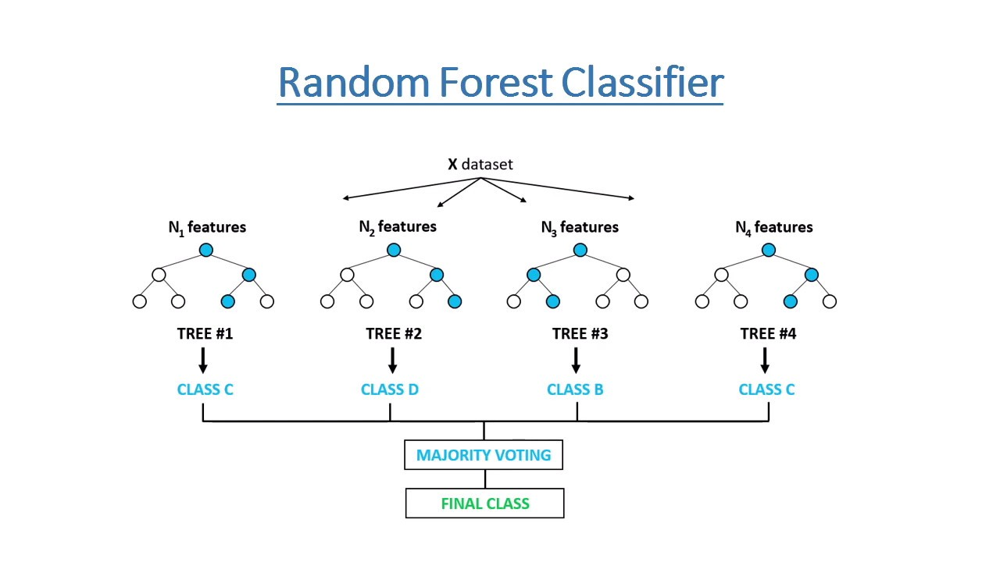

Digit Recognition - Random Forest¶
Project Overview¶
The Digit Recognition with Random Forest project aims to accurately classify handwritten digits using the Random Forest algorithm. It utilizes a dataset containing grayscale images of handwritten digits (0 to 9), each represented as a 28x28 pixel grid. The objective is to train a Random Forest classifier that can effectively recognize and classify digits based on their pixel values. The project provides a user-friendly web interface powered by Streamlit, where users can explore the dataset, train the model, evaluate its accuracy, and visualize predictions on new images.
Random Forest Code¶
import streamlit as st
import pandas as pd
from sklearn.model_selection import train_test_split
from sklearn.ensemble import RandomForestClassifier
from sklearn.metrics import accuracy_score
import matplotlib.pyplot as plt
# Train Model
def train_model(X_train, y_train):
model = RandomForestClassifier(random_state=42)
model.fit(X_train, y_train)
return model
# Main function
def main():
st.title("Digit Recognition with Random Forest")
# Load Dataset
st.header("Dataset Summary")
dataset = pd.read_csv("C:/Users/USER/Documents/My GitHub Folder/Machine Learning Project/Machine-Learning-Projects/1. Supervised Learning/6. Random Forest/digit.csv")
st.write("Dataset shape:", dataset.shape)
st.write("First 5 rows:")
st.write(dataset.head())
# Segregate Dataset
X = dataset.iloc[:, 1:]
Y = dataset.iloc[:, 0]
# Split Dataset
X_train, X_test, y_train, y_test = train_test_split(X, Y, test_size=0.25, random_state=0)
# Training
model = train_model(X_train, y_train)
# Model Accuracy
st.header("Model Accuracy")
y_pred = model.predict(X_test)
accuracy = accuracy_score(y_test, y_pred)
st.write("Accuracy of the Model: {:.2f}%".format(accuracy * 100))
# Display Image
st.header("Display Image")
index = st.slider("Select the index of the image to display", min_value=0, max_value=len(X_test)-1, value=10)
prediction = model.predict(X_test.iloc[[index]])
st.write("Predicted:", prediction[0])
fig, ax = plt.subplots()
ax.scatter([1, 2, 3], [1, 2, 3])
plt.axis('off')
plt.imshow(X_test.iloc[index].values.reshape((28, 28)), cmap='gray')
st.pyplot(fig)
if __name__ == "__main__":
main()